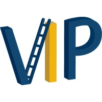

IAM Consulting Intern – Deloitte (Present)
- Support Oracle Cloud IAM role provisioning and access governance for enterprise clients.
- Design and implement least-privilege access models and role-based access control (RBAC) structures.
- Work across separation-of-duties (SoD) requirements to reduce access risk and support compliance audits.
About Me

Hi! I'm Keerat Rahman, a Computer Science student at Georgia Tech pursuing a combined BS+MS with a focus in security engineering. I'm currently interning at Deloitte, where I work on Oracle Cloud IAM and role provisioning — designing least-privilege access models and RBAC structures for enterprise clients. I'm passionate about the intersection of identity, security, and software engineering, and I enjoy building projects that put that knowledge into practice, like my machine learning system for detecting insider threats.
Education
-
BS + MS in Computer Science
Georgia Institute of Technology, Atlanta, GA
Expected Graduation: May 2027
Focus: Security Engineering
Concentrations: Artificial Intelligence, Cybersecurity
Minor: Political Science -
CompTIA Security+
Certification in core security principles, risk management, and network/IAM fundamentals
Work Experience
NPI Software Intern – Keysight Technologies - Santa Rosa, CA (May 2025 – )
- Automated integration of marketing content and test data in C# using Word, Excel, and databases.
- Designed a user-friendly UI and parsing script to extract 1,000+ tables into formatted datasheets.
- Integrated features into a legacy codebase and developed a dynamic report database.
- Automated integration of marketing content and test data in C# using Word, Excel, and databases.
- Designed a user-friendly UI and parsing script to extract 1,000+ tables into formatted datasheets.
- Integrated features into a legacy codebase and developed a dynamic report database.

R&D Software Engineering Co-op – Keysight Technologies - Santa Clara, CA (June 2024 – Dec 2024)
- Developed full-stack applications in C#, XAML, and C++ for fiber analysis, data analysis, and machine interfaces, with focuses on computer vision and multithreading.
- Built cleanroom software for fiber optics products to analyze and track beam quality and positioning.
- Created firmware-supporting tools for phase measurement boards & optics, enhancing continuous integration.
- Developed full-stack applications in C#, XAML, and C++ for fiber analysis, data analysis, and machine interfaces, with focuses on computer vision and multithreading.
- Built cleanroom software for fiber optics products to analyze and track beam quality and positioning.
- Created firmware-supporting tools for phase measurement boards & optics, enhancing continuous integration.

Machine Learning Engineer – Data-Driven Education (Jan 2024 – Present)
- Collaborating with registrar’s office to implement an AI chatbot within the student registration portal.
- Working with team to integrate AI chatbot with MongoDB registration database for seamless data interaction.
- Transitioning locally-stored chatbot and registration database to the cloud, using Azure and Mongo DB Atlas.
- Collaborating with registrar’s office to implement an AI chatbot within the student registration portal.
- Working with team to integrate AI chatbot with MongoDB registration database for seamless data interaction.
- Transitioning locally-stored chatbot and registration database to the cloud, using Azure and Mongo DB Atlas.

Projects
Insider Threat Anomaly Detection System
- Built an end-to-end ML system to detect insider threat behavior using the CERT Insider Threat Dataset (r4.2).
- Trained an Isolation Forest anomaly detection model and served predictions via a FastAPI backend.
- Containerized the application with Docker and deployed it to AWS EC2.
View on GitHub →
- Built an end-to-end ML system to detect insider threat behavior using the CERT Insider Threat Dataset (r4.2).
- Trained an Isolation Forest anomaly detection model and served predictions via a FastAPI backend.
- Containerized the application with Docker and deployed it to AWS EC2.
View on GitHub →
-
Company Database Project (Aug 2023)
- Designed and implemented a multi-tier MySQL relational database with stored procedures. -
Dungeon Crawler Game App (Dec 2023)
- Managed a team using Agile to develop an Android game app with testing and backend logic. -
CPU Creation (Apr 2024)
- Simulated a functional CPU with memory and interrupt capabilities using circuit software. -
LC-3 Assembly Text Editor (Dec 2023)
- Built subroutines and a text editor using LC-3 Assembly and user stack for memory.
Skills
Security & IAM
- Identity & Access Management
- RBAC / Least Privilege
- Separation of Duties
- CompTIA Security+
Cloud & DevOps
- AWS (EC2)
- Oracle Cloud
- Azure
- Docker
Languages & ML
- Python
- C# / C++
- FastAPI
- scikit-learn